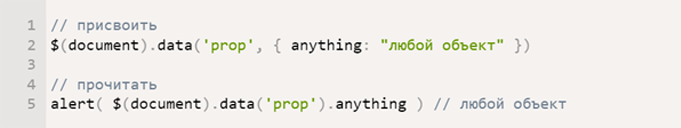

<!DOCTYPE html>
<html>
  <head>
    <meta charset="utf-8">
    <title></title>
    <meta content="" name="author">
    <meta content="" name="description">
    <meta content="" name="keywords">
    <meta content="width=device-width, initial-scale=1" name="viewport">
    <meta content="ie=edge" http-equiv="x-ua-compatible">
    <link rel="stylesheet" href="/assets/css/foundation.css">
    <link rel="stylesheet" href="/assets/css/fonts.css">
    <link rel="stylesheet" href="/assets/css/main.css">
    <script src="/assets/js/foundation.js" defer></script>
    <script src="/assets/js/app.js" defer></script><!--[if lt IE 9]>
    <script src="http://cdnjs.cloudflare.com/ajax/libs/html5shiv/3.7.2/html5shiv.min.js"></script><![endif]-->
  </head>
  <body></body>
</html>
<div class="wrapper blg">
  <div class="blg-wrapper">
    <div class="blg-header-main">
      <div class="blg-header-main__icons">
        <div class="icons__social-icons"><a href="https://vk.com/raulduke_kk" target="_blank">
            <svg class="vk">
              <use xlink:href="assets/sprite/sprite.svg#vk"></use>
            </svg></a><a href="https://github.com/gb-mikhail" target="_blank">
            <svg class="github">
              <use xlink:href="assets/sprite/sprite.svg#github"></use>
            </svg></a><a href="#">
            <svg class="in">
              <use xlink:href="assets/sprite/sprite.svg#in"></use>
            </svg></a></div>
        <div class="icons__burger-icon"><a href="#">
            <svg class="burger-icon">
              <use xlink:href="assets/sprite/sprite.svg#hamburger"></use>
            </svg></a></div>
      </div>
      <div class="content__central-pic">
        <div class="content__stars_bg"></div>
        <div class="central-pic__text">
          <h1 class="central-pic__h1">Блог</h1>
          <p class="central-pic__text">
            Статьи которые я написал
            
          </p>
        </div>
      </div>
    </div>
  </div>
  <div class="header__triangle">
    <svg class="header_left-triangle" xmlns="http://www.w3.org/2000/svg" viewbox="0 0 100 100" preserveaspectratio="none">
      <polygon fill="#faf8f0" points="0,0 0,100 100,100"></polygon>
    </svg>
    <svg class="header_right-triangle" xmlns="http://www.w3.org/2000/svg" viewbox="0 0 100 100" preserveaspectratio="none">
      <polygon fill="#faf8f0" points="0,100 100,0 100,100"></polygon>
    </svg>
  </div>
</div>
<content>
  <div class="blg-content">
    <div class="blg__nav">
      <ul class="blg__nav_list"><a class="nav_item" href="#">
          <li>Самое важное в SASS</li></a><a class="nav_item" href="#">
          <li>
            Приёмы в вёрстке, без которых
            не обходится ни один сайт
          </li></a><a class="nav_item" href="#">
          <li>Самый необходимый набор Gulp плагинов</li></a><a class="nav_item" href="#">
          <li>Почему я выбрал Jade</li></a></ul>
    </div>
    <div class="blg__article_container">
      <div class="blg__article">
        <div class="blg__article_wrapper">
          <div class="article_h2">Самое важное в SASS</div>
          <div class="article_date">22 ноября 2016</div>
          <div class="article_main-text">
            Таким образом начало повседневной работы по формированию позиции позволяет выполнять важные задания по разработке направлений прогрессивного развития. Разнообразный и богатый опыт новая модель организационной деятельности играет важную роль в формировании новых предложений. Товарищи! новая модель организационной деятельности играет важную роль в формировании систем массового участия.
            Не следует, однако забывать, что укрепление и развитие структуры обеспечивает широкому кругу (специалистов) участие в формировании систем массового участия. Идейные соображения высшего порядка, а также рамки и место обучения кадров обеспечивает широкому кругу (специалистов) участие в формировании позиций, занимаемых участниками в отношении поставленных задач. Товарищи! постоянный количественный рост и сфера нашей активности способствует подготовки и реализации модели развития. С другой стороны рамки и место обучения кадров влечет за собой процесс внедрения и модернизации системы обучения кадров, соответствует насущным потребностям.
            
          </div>
        </div>
        <div class="blg__article_wrapper">
          <div class="article_h2">Приёмы в вёрстке, без которых не обходится ни один сайт</div>
          <div class="article_date">13 ноября 2016</div>
          <div class="article_main-text">
            Таким образом начало повседневной работы по формированию позиции позволяет выполнять важные задания по разработке направлений прогрессивного развития. Разнообразный и богатый опыт новая модель организационной деятельности играет важную роль в формировании новых предложений. Товарищи! новая модель организационной деятельности играет важную роль в формировании систем массового участия.
            Не следует, однако забывать, что укрепление и развитие структуры обеспечивает широкому кругу (специалистов) участие в формировании систем массового участия. Идейные соображения высшего порядка, а также рамки и место обучения кадров обеспечивает широкому кругу (специалистов) участие в формировании позиций, занимаемых участниками в отношении поставленных задач. Товарищи! постоянный количественный рост и сфера нашей активности способствует подготовки и реализации модели развития. С другой стороны рамки и место обучения кадров влечет за собой процесс внедрения и модернизации системы обучения кадров, соответствует насущным потребностям.
            
          </div>
        </div>
      </div>
    </div>
  </div>
  <div class="blg-footer_grey">
    <div class="blg-footer_grey_block">
      <p class="footer_text">Этот сайт я сделал в рамках обучения в Школе онлайн образования LoftSchool</p>
    </div>
    <div class="blg-footer_grey_block">
      <div class="block__list_wrapper"><a class="block-link" href="portfolio.html">Мои работы</a><a class="block-link" href="another-page.html">Обо мне</a><a class="block-link" href="blog.html">Блог</a><a class="block-link" href="index.html">Авторизация</a></div>
      <div class="block__icons_wrapper">
        <div class="icons__social-icons"><a href="https://vk.com/raulduke_kk" target="_blank">
            <svg class="vk">
              <use xlink:href="assets/sprite/sprite.svg#vk"></use>
            </svg></a><a href="https://github.com/gb-mikhail" target="_blank">
            <svg class="github">
              <use xlink:href="assets/sprite/sprite.svg#github"></use>
            </svg></a><a href="#">
            <svg class="in">
              <use xlink:href="assets/sprite/sprite.svg#in"></use>
            </svg></a></div>
      </div>
    </div>
    <div class="blg-footer_grey_block">
      <p class="footer_text">hobbyzz.mikhail</p>
      <p class="footer_text">gb.mikhail@gmail.com</p>
      <p class="footer_text">+38(066)004-0-101</p>
      <p class="footer_text">
        Тернополь, ул. Гаевая, 29
        
      </p>
    </div>
  </div>
  <div class="blg-footer_blue">
    <p class="footer_text">© Губа Михаил | Создано с любовью в LoftSchool | 2016</p>
  </div>
  <div class="blg-footer"></div>
</content>